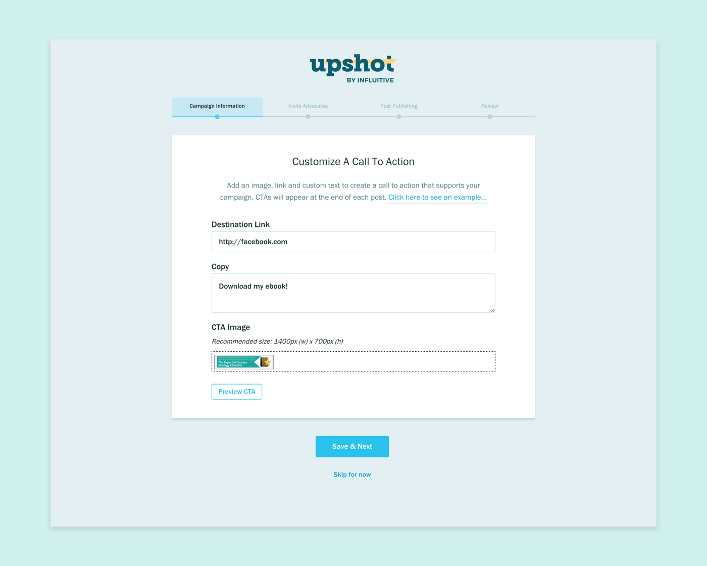

The initial onboarding flow for marketers was confusing and difficult to complete. A month after the beta launch, I redesigned the entire flow based on user feedback. Through user testing, I was able to create a comprehensive and easy process. However, due to technical resource constraints, I was limited to using existing design elements and quick fixes to meet our deadlines.
Designing the Campaign Creation Flow for Upshot
UX and UI Design
Final Design
The new flow allows marketers to create multiple marketing campaigns. It allows users to skip steps if desired. The final UI only compose of existing elements due to limited development time and resource.
Create new campaign flow.

Step 2 of the campaign creation flow.
Final flow for onboarding and creating new campaigns.
Redesign the Campaign Creation Flow
Our customers were having trouble completing the onboarding flow on their own because it did not align with their workflow. Based on their feedback, I redesign the flow to meet the following goals:
- Collect all the information we need from the marketer
- Marketers have all the information that they need
- Steps should be logically ordered and are easy to follow
I then created low-fidelity mockups and tested them with customers & colleagues. I iterated on the flow until the above goals were met.
Original marketer onboarding flow.
Low fidelity wires for user testing.
Navigation Redesign
I wanted to redesign the navigation so that users can complete the process quickly and seamlessly. The navigation redesign goals were:
- A clear insight on all the steps within the process
- Allow users to come back and complete the steps at any time
- Allow users to navigate freely between the steps
- Show which steps are complete and which steps are not
I first experimented with existing UI elements. However, none of them were able to meet all the goals. I then experimented with new UI elements.
The ideal design was to use a side navigation. It clearly indicates the status of each step and it allows users to save & exit at any time. Unfortunately, we didn’t go with that design due to a lack of development time.
Alternative designs using existing UI elements.
Alternative designs exploring new UI elements.

The ideal campaign creation navigation design.